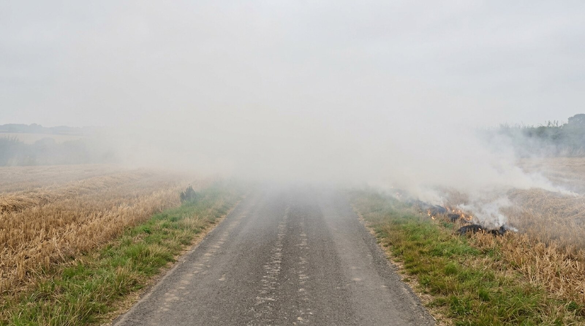
Visible 0,4–0,7 µm
Fumée sèche traversée
Portée à travers l’obscurcissant à mesurerTHR-LW

Visible 0,4–0,7 µm
Portée à travers l’obscurcissant à mesurerTHR-LW
Fusion VIS + LWIR
Portée à travers l’obscurcissant à mesurerTHR-LW
Visible 0,4–0,7 µm
Résolution au sol à mesurerFNX-SWIR sur porteur véhicule
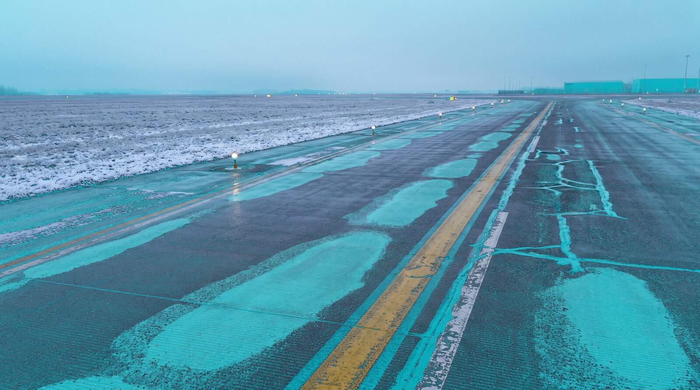
Fusion VIS + SWIR
Résolution au sol à mesurerFNX-SWIR sur porteur véhicule
Périmètre de fourniture
SMA-RTY France conçoit et assemble ses instruments à Aubière, sur le site de l’Institut Pascal. Elle fournit la tête optique, la chaîne de traitement et la documentation de définition. L’intégrateur garde la maîtrise d’œuvre de son système.
Capacités
Deux cas où l’image visible et une bande infrarouge unique ne permettent pas de conclure.
Deux plaques indiscernables à l’œil, mises à l’équilibre thermique. En 8–14 µm l’écart est nul. En 0,9–1,7 µm la réflectance diffère franchement : la discrimination porte sur la matière.
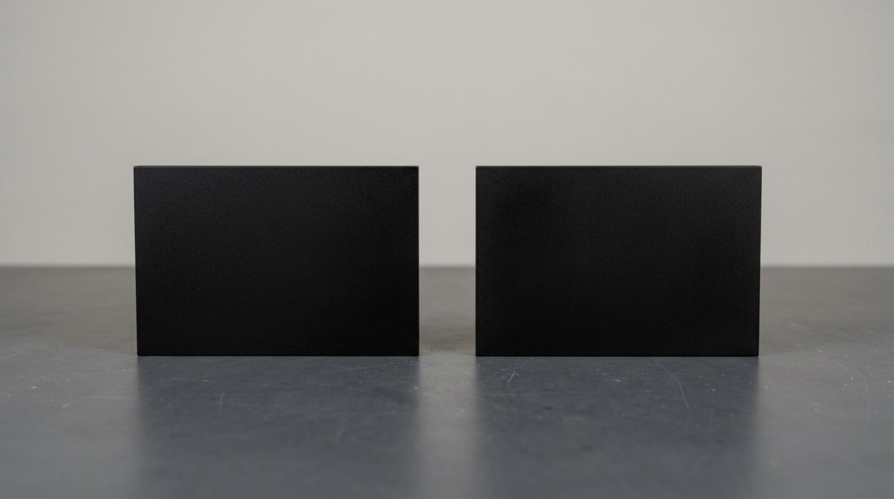
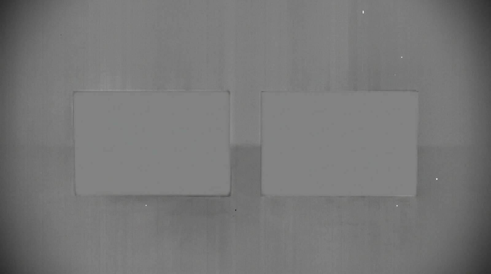
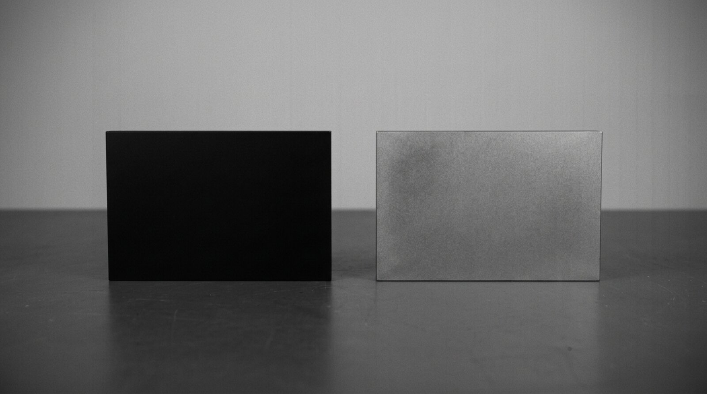
Toute optique renvoie la lumière vers sa source. Sous illumination coaxiale eye-safe, un objectif enfoui dans une haie rend un point saturant. Le point dur tient à la dynamique : garder la scène lisible pendant qu’un point sature.
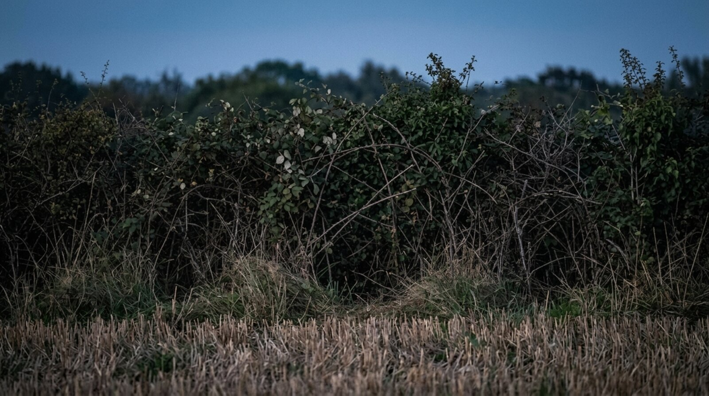
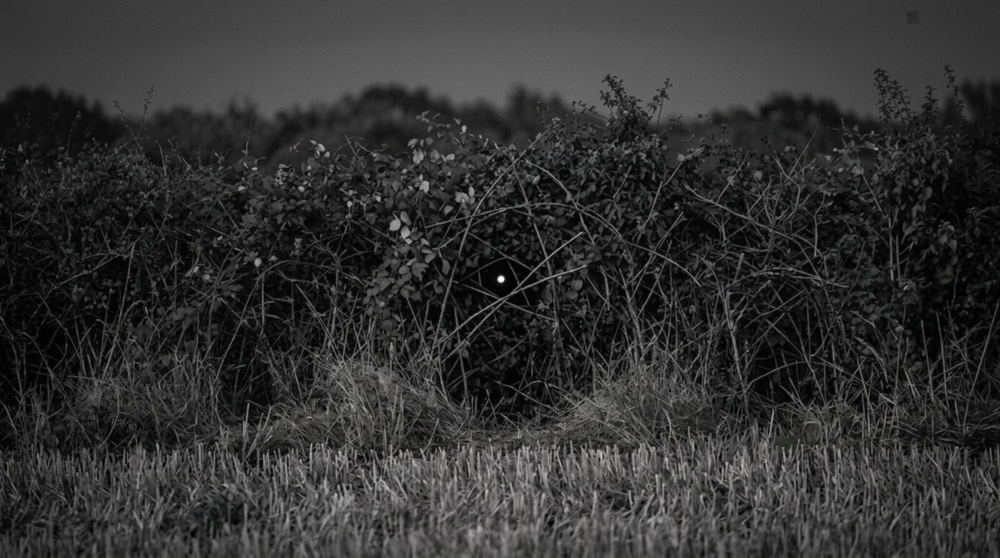
Projets livrés
Des caméras ASB-1080 à global shutter suivent des particules dans un volume. L’obturation globale fige chaque particule sans traînée de balayage, ce qui rend les trajectoires exploitables image après image. Le système reconstruit les déplacements en trois dimensions et en déduit les schémas de circulation d’air en salle blanche et en installation de chauffage, ventilation et climatisation, avec des données de qualité d’air et d’efficacité de circulation disponibles en temps réel.
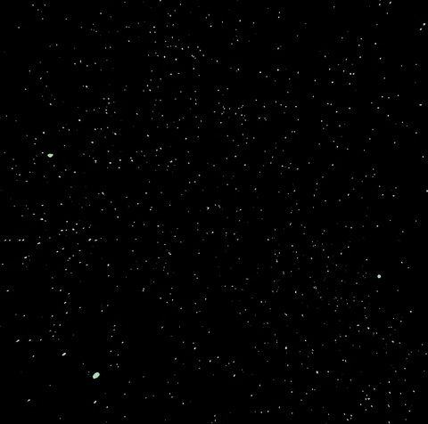
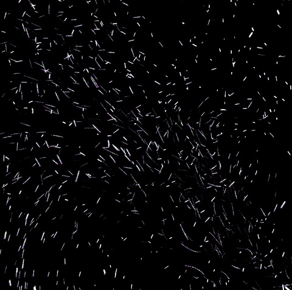
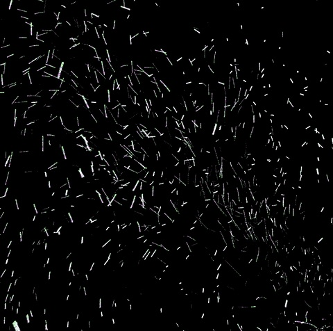
Navigation visuelle « inside-out » : le drone se localise en regardant le sol, sans signal extérieur. Une carte apprise au préalable et le traitement embarqué recalent la position en vol. L’affichage de mission confronte la trajectoire de référence et la trajectoire estimée, et rend compte du nombre d’amers verrouillés et de l’indice de confiance de la solution. La localisation annoncée est de 20 cm, ce qui ouvre le vol autonome en tunnel et en canyon urbain.
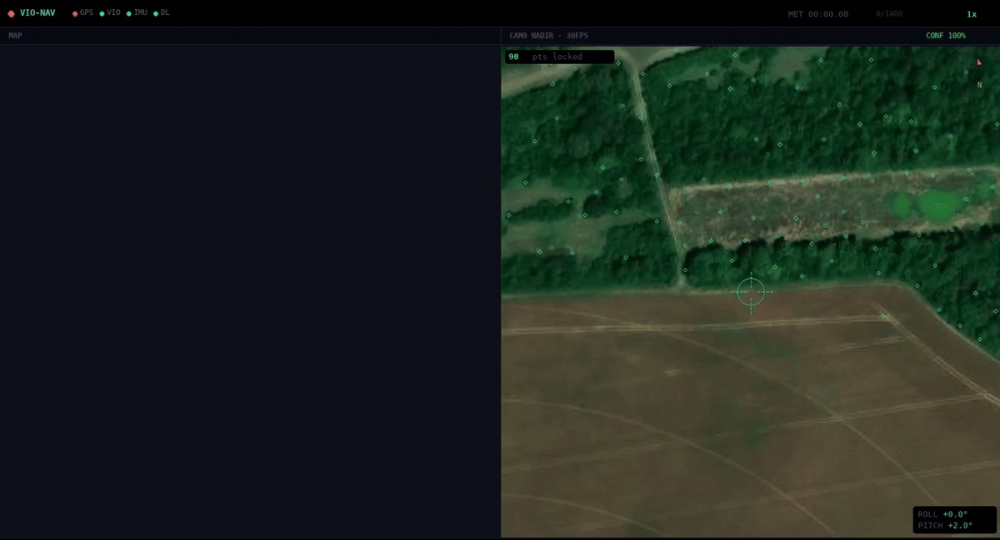
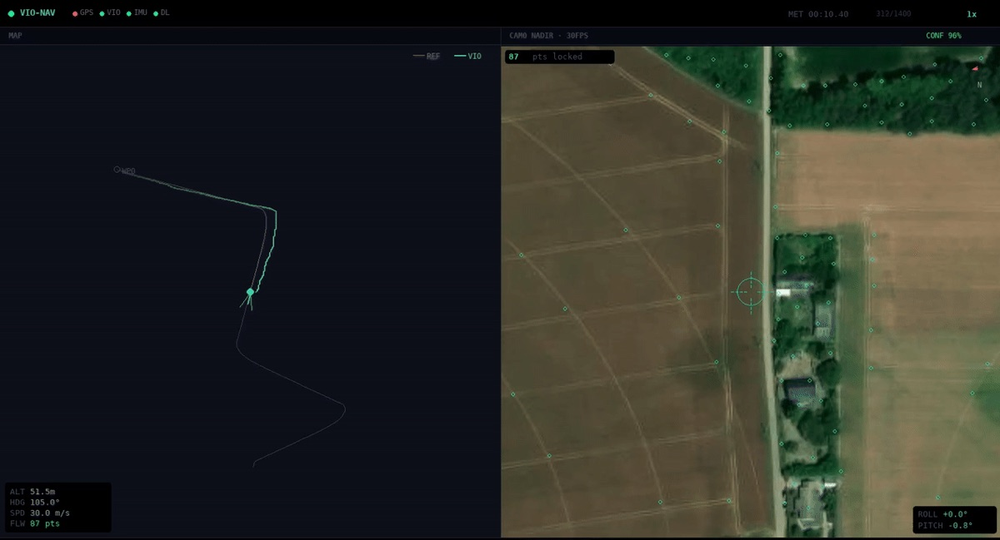
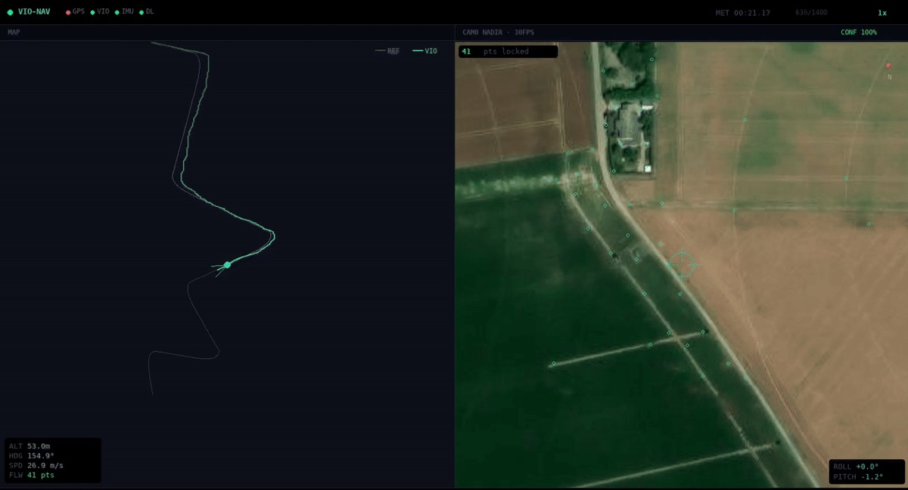
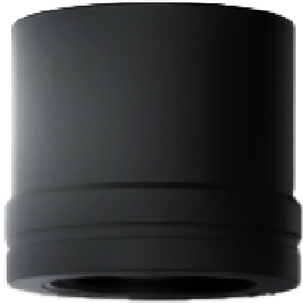
01Optique→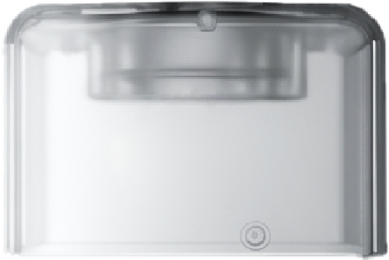
02Capot & mécanique→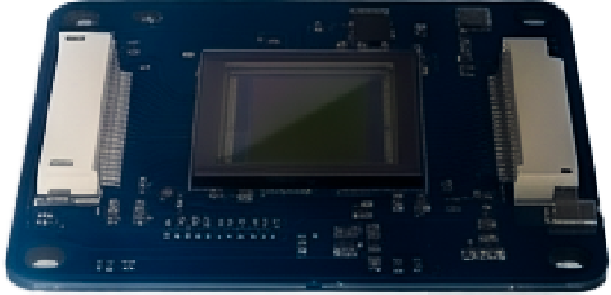
03Capteur→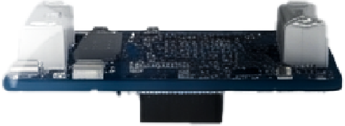
04Calcul embarqué→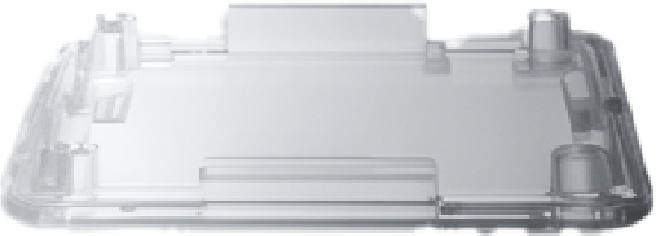
05Embase & interfaces→Intégration
La vue éclatée est celle de la THR-LW Thermal, caméra LWIR de production : objectif, capot, carte capteur, carte de traitement, capot arrière et interfaces. Chaque étage est ajustable au besoin du porteur et du système ; les valeurs citées ci-dessous sont celles publiées au catalogue pour cette caméra.
Objectif dessiné pour la bande et pour le porteur
Combinaison optique calculée en interne selon la bande : verres et traitements antireflet différents en visible, en SWIR et en LWIR. Athermalisation sur la plage d’emploi, monture tenue en vibration, champ et ouverture arbitrés avec vous. Sur la THR-LW, l’objectif se monte et se démonte : plusieurs formats optiques sont proposés pour un même corps de caméra.
Paramètres ajustables
Étanchéité, dissipation, tenue mécanique
Le capot évacue la chaleur du calcul sans ventilateur, protège l’ensemble et porte les interfaces mécaniques. L’encombrement et la masse admissibles par le porteur sont fixés en début d’étude et commandent le reste de la conception. La THR-LW tient dans 55 × 55 × 40 mm et fonctionne de −10 à +55 °C ; le corps coté sur la vue éclatée mesure 50 × 50 × 35 mm, hors objectif et connectique.
Paramètres ajustables
Détecteur et électronique de proximité
Microbolomètre en LWIR, InGaAs en SWIR, CMOS en visible et NIR. L’électronique de proximité est dessinée par nos soins : pilotage, séquencement, correction de non-uniformité, gestion du gain. Cet étage fixe la qualité du premier pixel. Sur la THR-LW, le détecteur est un microbolomètre de pas 12 µm en 640 × 480, non refroidi et sans obturateur mécanique, pour une sensibilité annoncée sous 60 mK.
Paramètres ajustables
FPGA au fil du flux, GPU pour l’inférence
Le FPGA met en forme le flux pixel à la volée : correction, recalage inter-bandes, horodatage, sans mémoire de trame inutile. Le GPU exécute la détection. Le CPU du porteur reste disponible pour la fonction système. Sur la THR-LW, le FPGA porte la correction de non-uniformité, la correction de pixels défectueux et le gain automatique, et sort un flux 14 bits jusqu’à 60 Hz.
Paramètres ajustables
Ce que le système reçoit, et sous quelle forme
Alimentation, synchronisation, protocoles et connectique. Le format de sortie est une décision d’architecture : flux brut, flux corrigé et recalé, ou métadonnées horodatées seules. Nous livrons la documentation qui permet à l’intégrateur de tenir sa propre autorité de conception. La THR-LW sort en USB 3.1 Type-C ou en MIPI CSI-2 et se contente de 12 V pour 2,5 W.
Paramètres ajustables
Instruments
Trois têtes optiques et un module de calcul, conçus pour fonctionner ensemble ou séparément.
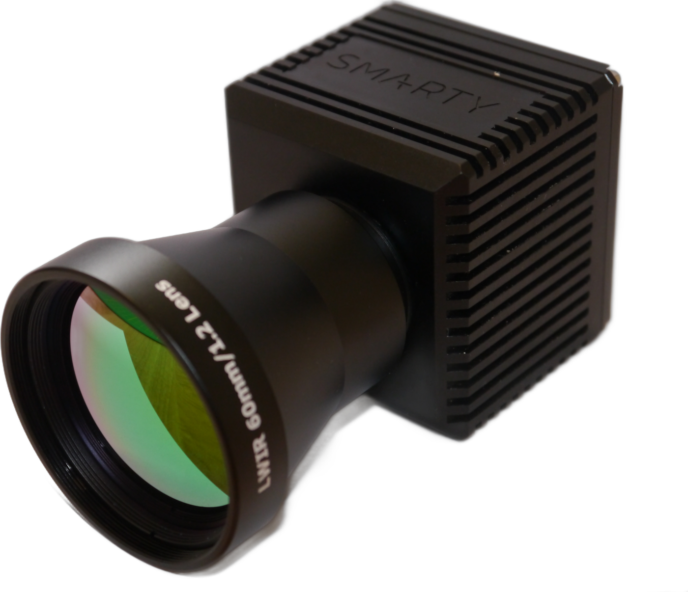
LWIR 8–14 µm
Caméra thermique intelligente, sans volet mécanique
Les erreurs et aberrations thermiques sont corrigées par traitement embarqué, ce qui supprime le volet de calibration et les interruptions d’image qu’il impose.
Prix Électrons d’Or 2023, catégorie Électronique industrielle
Voir la fiche →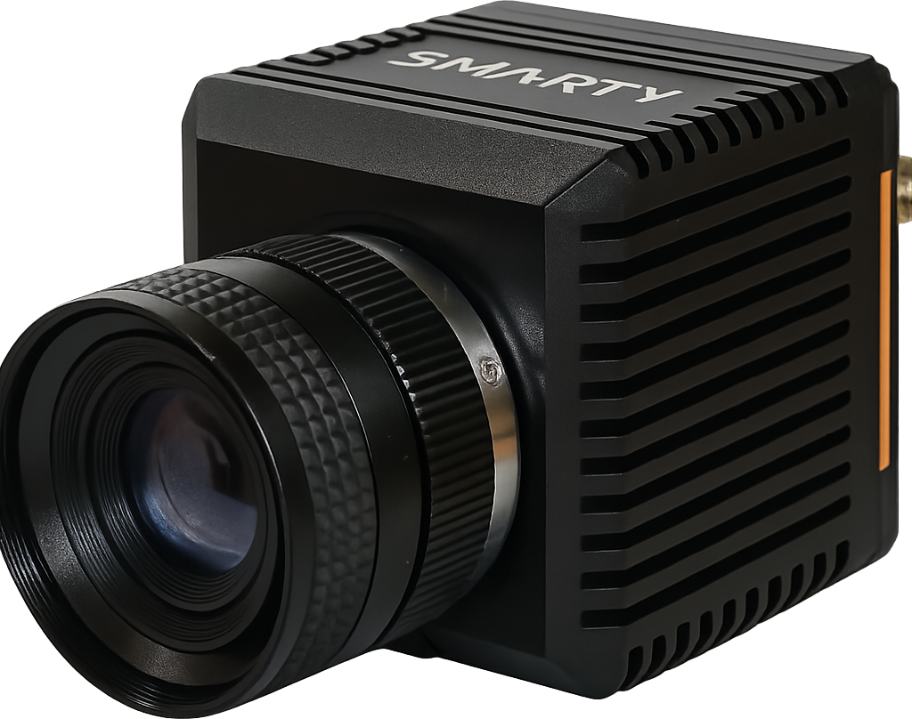
SWIR 0,9–1,7 µm
Caméra SWIR pour la discrimination de matière
Réflectance au-delà du visible : eau et glace, dépôts, textiles, et sources actives à 1,06 et 1,55 µm.
Voir la fiche →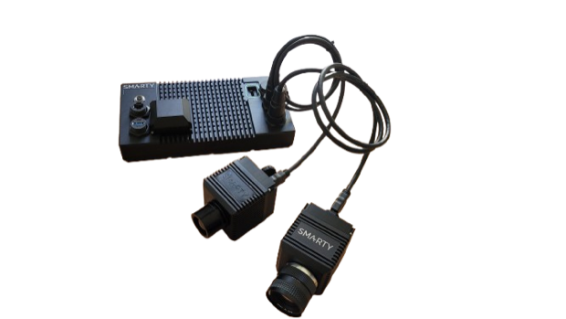
Visible · NIR · SWIR · LWIR
Tête multi-bandes recalée et fusionnée
Acquisition simultanée des quatre bandes sur un même axe, recalage au pixel et couche de fusion à la cadence capteur.
Voir la fiche →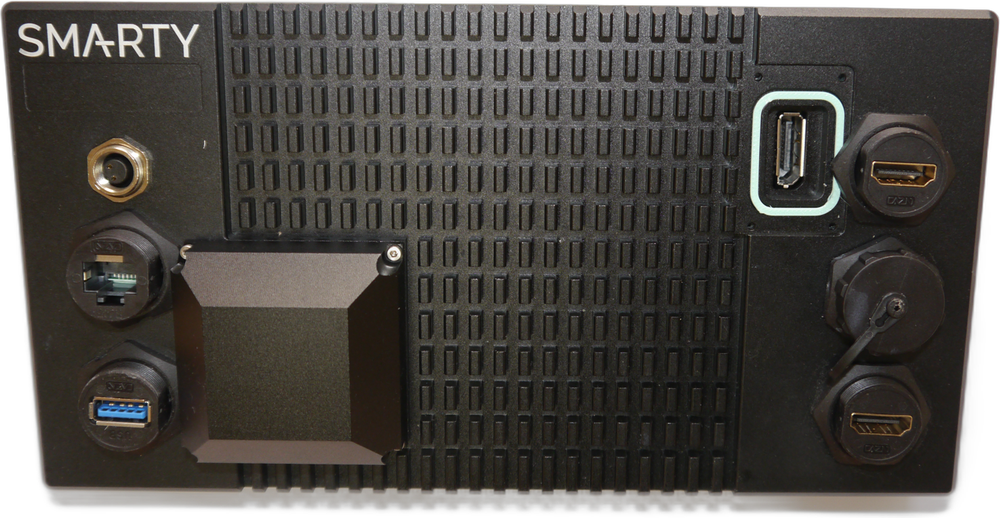
FPGA + GPU
Module de traitement au plus près du capteur
Mise en forme du flux pixel sur FPGA, inférence sur GPU, sortie en métadonnées horodatées. Intégrable aux trois têtes.
Voir la fiche →| Instrument | Bande | Fonction dominante | Sortie | Statut |
|---|---|---|---|---|
| THR-LW | LWIR 8–14 µm | Nuit, obscurcissants secs, anomalie thermique, sans volet mécanique | Flux corrigé + détections | En production |
| FNX-SWIR | SWIR 0,9–1,7 µm | Matière, eau et glace, sources 1,06 / 1,55 µm | Flux corrigé + détections | Intégration anticipée |
| METACAMERA | Visible · NIR · SWIR · LWIR | Acquisition multi-bandes recalée et fusionnée | Bandes recalées + couche de fusion | Plateforme d’étude et d’intégration |
| BNX Carrier | Sans objet | Mise en forme FPGA, inférence GPU à bord | Métadonnées horodatées | Intégrable aux trois têtes |
Formats, interfaces et performances mesurées sur fiche technique, sous accord de confidentialité.
Applications
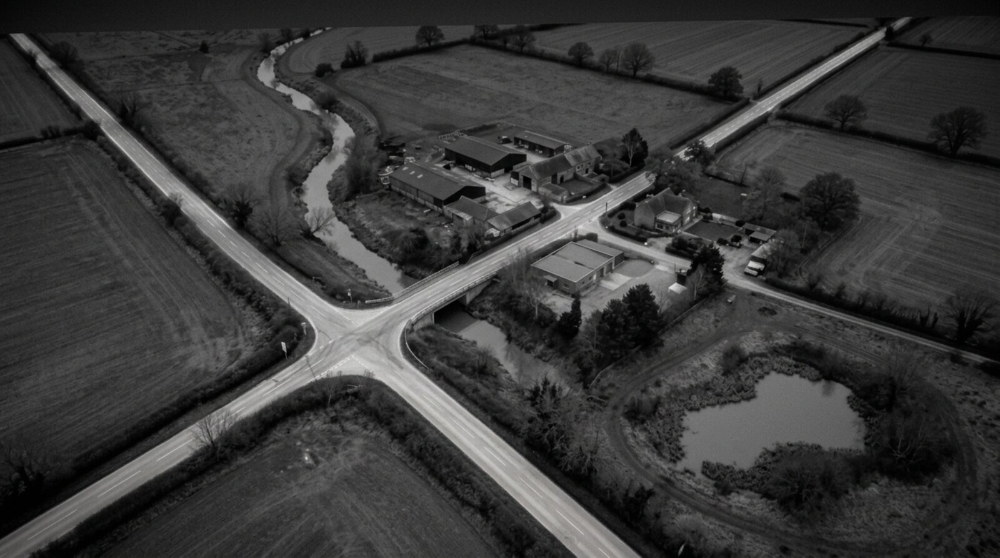
Défense & sécurité Navigation en GNSS contesté, désignation, protection de la force.Équipe
Quatre ingénieurs et chercheurs à Aubière. L’un d’eux lit votre demande et y répond.
Survolez un portrait pour le parcours détaillé.
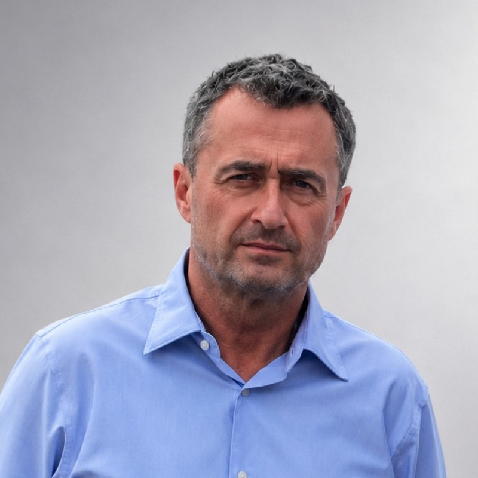
Conduit la stratégie technique de SMA-RTY France et le lien avec la recherche académique. Ses travaux portent depuis deux décennies sur le traitement d’image au plus près du capteur.
Chief Executive Officer SMF
Caméras intelligentes, architectures FPGA de vision
Responsable de la chaîne de détection embarquée : quantification des modèles, placement FPGA/GPU, budget de latence. C’est l’étage qui permet de sortir des métadonnées plutôt qu’un flux vidéo.
Edge AI Specialist
Inférence de réseaux de neurones sur FPGA et calcul embarqué
Travaille sur l’acquisition simultanée de plusieurs bandes et sur leur recalage : synchronisation des capteurs, correction géométrique, couche de fusion. C’est le cœur de la différence entre quatre caméras et un instrument.
PhD in Multispectral Smart Cameras
Acquisition multi-bandes, recalage et fusion
Conçoit et met au point la chaîne électronique entre le détecteur et le système : pilotage capteur, séquencement, protocoles et connectique de sortie.
Embedded Systems Engineer
Électronique de proximité, firmware, traitement du signal et VHDL
Laboratoire
Chaque essai est filmé au banc : une à deux minutes, la manipulation réelle, le chiffre à l’écran. L’article scientifique correspondant est joint à chaque épisode.
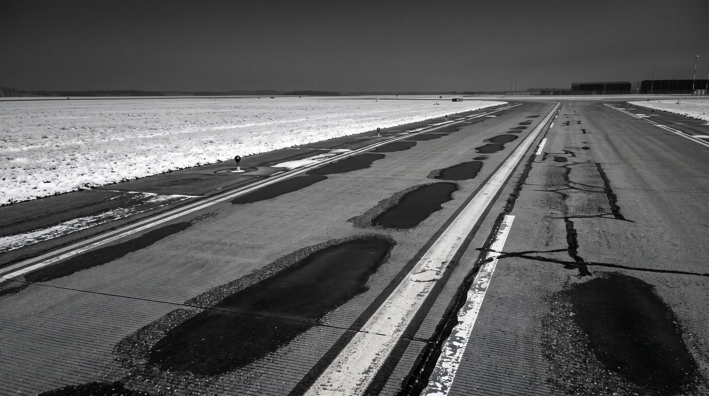
1:48 Épisode 03 SWIR2026-07·Banc réflectance
Trois angles d’incidence, dalle rainurée à température d’équilibre. Écart de réflectance mesuré entre eau retenue et glace formée.
Voir l’essai → Article en préparation
2026-05·Banc de recalage
Erreur résiduelle entre visible, SWIR et LWIR après calibration, mesurée sur toute la plage de température d’emploi.
Voir l’essai → Article en préparation
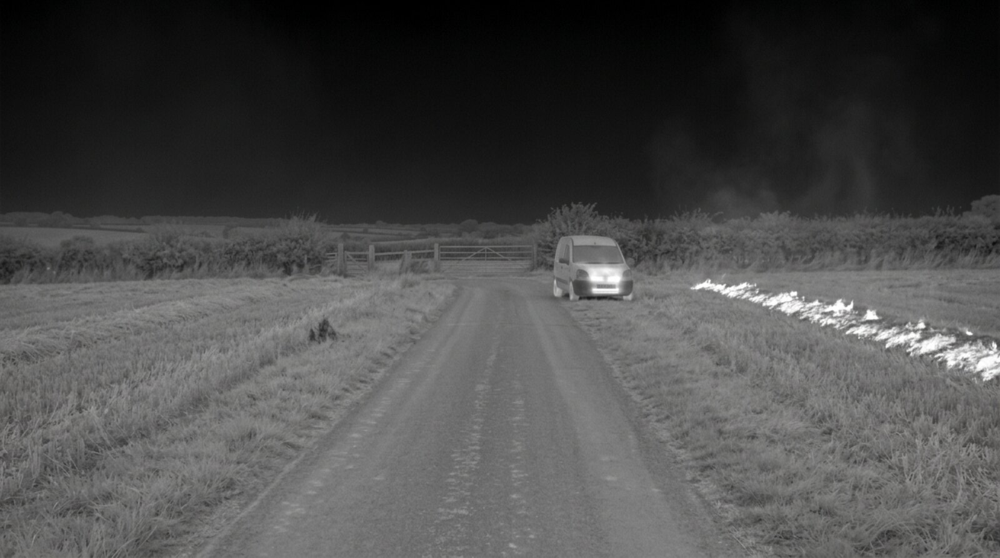
1:22 Épisode 01 LWIR2026-03·Chambre obscurcissante
Atténuation à 8–14 µm en fonction de la densité optique visible, cible de contraste connu en fond de chambre.
Voir l’essai → Article en préparation
Contact
SMA-RTY naît des travaux conduits à l’Institut Pascal, unité mixte du CNRS et de l’Université Clermont Auvergne, sur le traitement de l’image au plus près du capteur. La question de départ est restée la même : comment décider à bord, sans renvoyer le flux au sol ni saturer le calculateur du porteur. La société est créée en 2019 et s’installe sur le site même de l’unité, à Aubière. L’entité française porte l’optronique et le calcul embarqué ; l’entité italienne du groupe porte les réseaux et la transmission. La caméra thermique THR-LW, issue de ces travaux, a reçu le prix Électrons d’Or 2023 dans la catégorie Électronique industrielle.
SMA-RTY Italia SRL : Cologno Monzese (Milan), Vimodrone (Milan), La Spezia
Demande technique
Quatre questions suffisent à pré-cadrer un besoin optronique. Vous recevez un avis technique écrit : faisabilité, bande pertinente, points durs.
Réponse sous 48 h ouvrées